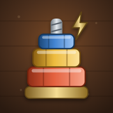

TinkerboltApp: Tinkerbolt for Android (package com.baigames.tinkerbolt)
Applies to: version 1.0.0 and later, until this page is updated
Effective date: 13 October 2026 · Last updated: 13 October 2026
Contact: bohus.ionut@gmail.com
Tinkerbolt is a single-player nut-sorting puzzle game made by an independent developer, BAI Games ("we", "us"). This policy explains what the app does with information. The short version: the game does not collect, send, share or sell any personal data. It has no ads, no analytics, no accounts and no in-app purchases. Your progress stays on your phone.
To remember your progress, the game saves a small amount of game data only on your device, in the app's private storage:
| Stored on your device | Why |
|---|---|
| Levels completed, stars and best move counts | So you can continue where you left off |
| Cogs (in-game currency, earned only by playing), hints, workshop items, and nut/bolt styles you've unlocked or equipped | Game features |
| Daily Job date and streak | So the daily puzzle and streak work |
| Settings (sound, music, vibration, colour symbols) and which tips you've seen | To remember your choices |
None of this identifies you, and none of it leaves your device. We cannot see it.
The Android app framework we use (Capacitor) declares the standard Internet permission. Tinkerbolt doesn't use it to send any data; it only uses it if you open the privacy-policy link. The app may use your phone's vibration for haptic feedback, and you can switch that off in Settings.
Use Settings → Reset progress in the game, or uninstall the app. Either one removes all game data from your device. Android's "Clear storage" for the app does the same.
Tinkerbolt is a general-audience puzzle game. It collects no personal information from anyone, including children.
If a future version changes any of this (for example, if it adds optional ads or purchases), we will update this page and the "Last updated" date before that version is released, and the Google Play Data safety section will be updated to match.
Questions or requests: bohus.ionut@gmail.com